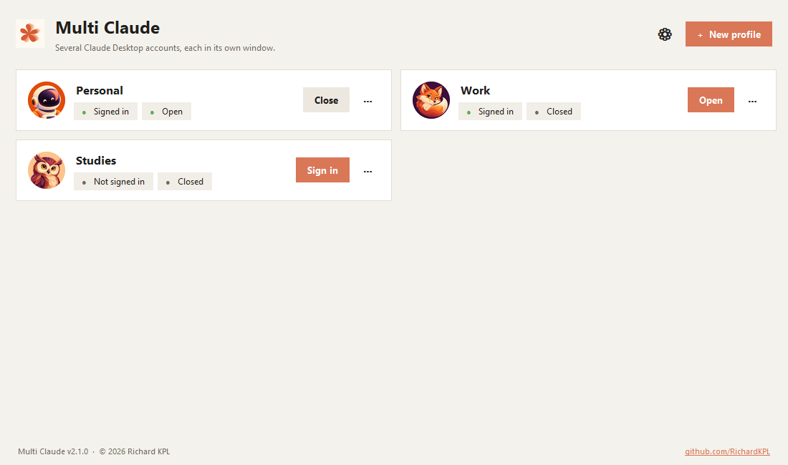
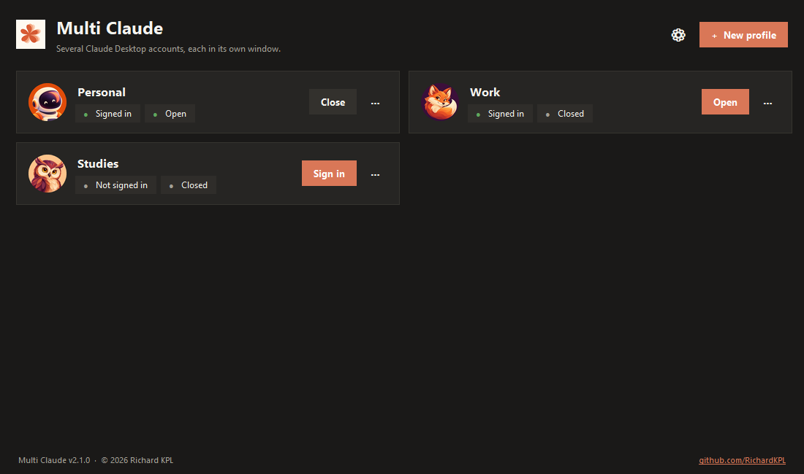
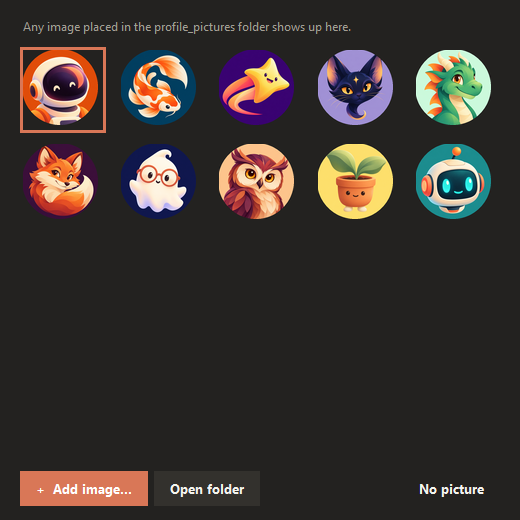
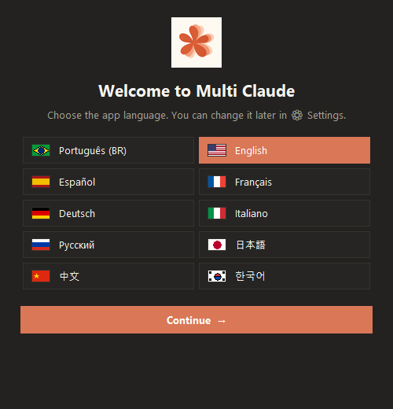

Multi Claude opens each Claude Desktop account in its own window, with separate sign-ins, sessions and settings. One .exe, no installation.

Built for people who use more than one Claude account — personal, work or school.
Each profile is an isolated Claude Desktop with its own sign-in and sessions.
Choose an account in your browser and sign-in goes to the right profile.
See what is connected and open. Open, close or sign out with one click.
Built-in gallery or your own images — any image in the folder becomes an option.
Follows the Windows theme live, including the title bar.
Português, English, Español, Français, Deutsch, Italiano, Русский, 日本語, 中文, 한국어.
All data lives next to the .exe. Carry it on a USB drive.
Finds Claude profiles already on your computer and imports them in seconds.
From download to a second account in less than a minute.
A clean interface in both themes.



Free, open source and with no installation.
⬇ Download Multi Claude